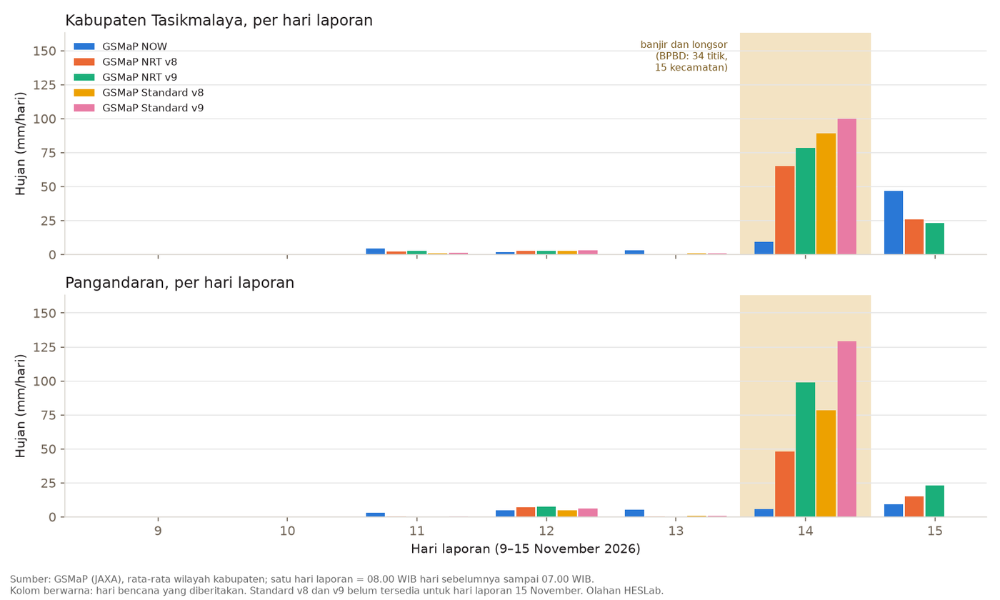
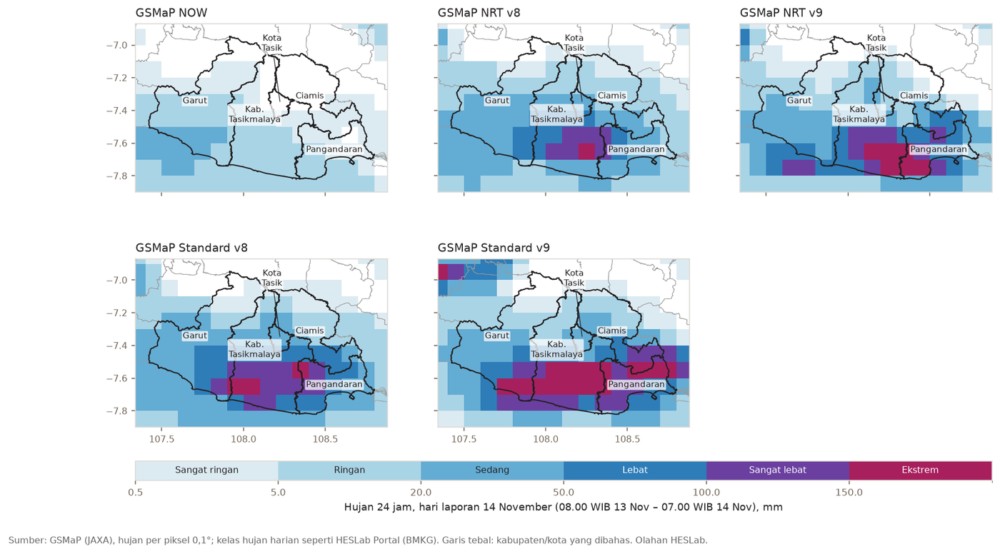

Sabtu dini hari, 14 November 2026, hujan lebat mengguyur Kabupaten Tasikmalaya bagian selatan. Menjelang pagi, Sungai Citoe meluap dan memutus jalan Karangnunggal–Cipatujah, sementara longsor, pohon tumbang, dan banjir terjadi di belasan kecamatan. Tulisan ini membaca kejadian itu dengan lima produk hujan satelit GSMaP: tiga yang terbit cepat (NOW, NRT v8, dan NRT v9) dan dua produk Standard (v8 dan v9) yang terbit beberapa hari kemudian. Empat produk sepakat bahwa hujan turun deras sejak lewat tengah malam sampai pagi, dengan inti terlebat di selatan Tasikmalaya dan Pangandaran. GSMaP NOW baru mencatatnya beberapa jam kemudian.

Apa yang tercatat di lapangan
Hujan deras turun hampir semalaman sejak Jumat malam, 13 November (Kapol.id). Menurut Kapolsek Cipatujah, air Sungai Citoe mulai masuk ke jalan sekitar pukul 04.00 WIB. Pukul 06.00 jalan Karangnunggal–Cipatujah tidak bisa dilewati kendaraan, air lebih tinggi dari lutut orang dewasa dan berarus deras, dan sampai pukul 10.00 air belum surut. Sawah dan kebun di bantaran sungai ikut terendam (Inilah Tasik). Warga Karangnunggal juga melaporkan Sungai Cilangla meluap (Lintas Priangan).
Sampai Sabtu pukul 24.00, BPBD Kabupaten Tasikmalaya mencatat sedikitnya 34 titik kejadian di 15 kecamatan, antara lain Bantarkalong, Bojongasih, Bojonggambir, Cibalong, Cipatujah, Jatiwaras, Karangnunggal, Parungponteng, Salopa, Sodonghilir, dan Taraju. Sebagian besar berupa longsor dan tanah bergerak. Jembatan penghubung Parungponteng–Cibalong rusak berat, ruas jalan tertutup tanah dan pohon, enam rumah di Bojonggambir tertimpa tanah dan pohon, dan empat keluarga di Jatiwaras mengungsi (Radar Tasik). Banjir merendam permukiman di Desa Cikadongdong, Bojongasih (60 KK, sekitar 200 jiwa), 40 rumah di Desa Cipanas, Cipatujah, dan 3 rumah di Desa Sepatnunggal, Sodonghilir (Radar Tasik).
Apa kata satelit
Hujan dari lima produk GSMaP dirata-ratakan per kabupaten/kota untuk Kabupaten Tasikmalaya dan empat wilayah di sekitarnya. Satu hari laporan adalah pukul 08.00 WIB hari sebelumnya sampai 07.00 WIB tanggal itu, sama seperti di HESLab Portal. Jam pada tulisan ini adalah akhir jam, dalam WIB. Produk Standard baru tersedia sampai 14 November pukul 07.00, jadi tabel di bawah memakai jendela yang sama untuk semua produk.
| 13 Nov 20.00 – 14 Nov 07.00 WIB | NOW | NRT v8 | NRT v9 | Standard v8 | Standard v9 |
|---|---|---|---|---|---|
| Kabupaten Tasikmalaya | 9 mm | 65 mm | 79 mm | 89 mm | 100 mm |
| Kota Tasikmalaya | 1 mm | 31 mm | 19 mm | 43 mm | 29 mm |
| Pangandaran | 6 mm | 48 mm | 99 mm | 78 mm | 129 mm |
| Ciamis | 1 mm | 13 mm | 22 mm | 25 mm | 50 mm |
| Garut | 11 mm | 25 mm | 25 mm | 38 mm | 43 mm |
Sebelum malam itu, Tasikmalaya hampir kering: lima hari laporan 9 sampai 13 November hanya mencatat 0 sampai 4 mm sehari. Menurut NRT v8, hujan di Kabupaten Tasikmalaya mulai sekitar pukul 01.00, menguat terus sampai paling deras pukul 05.00 sampai 07.00, sekitar 13 sampai 14 mm per jam sebagai rata-rata seluruh kabupaten, lalu reda setelah pukul 09.00. Sampai pukul 04.00, saat Sungai Citoe mulai masuk jalan, sudah turun sekitar 25 mm. Standard v8 mencatat jam-jam yang lebih deras, 18 sampai 21 mm per jam pada pukul 05.00 sampai 07.00, dan Standard v9 sudah mencatat hujan sejak pukul 22.00. Sampai pukul 12.00, total hujan di Kabupaten Tasikmalaya sekitar 86 mm menurut NRT v8 dan 96 mm menurut NRT v9. Hujan di produk Standard belum berhenti pada pukul 07.00, jadi totalnya kemungkinan lebih besar dari angka di tabel.
GSMaP NOW bercerita lain. Sampai pukul 07.00, NOW hanya mencatat 9 mm. Jam-jam terderas menurut NOW baru datang pukul 08.00 dan 09.00, 18 dan 25 mm, sehingga sebagian besar hujannya masuk hari laporan 15 November. Total NOW sampai pukul 12.00 adalah 53 mm. Pergeseran waktu seperti ini juga terlihat pada banjir Medan 5 November.

Peta memperlihatkan bahwa hujan terlebat jatuh di jalur selatan, dari Kabupaten Tasikmalaya bagian selatan sampai Pangandaran, sedangkan bagian utara, termasuk Kota Tasikmalaya, jauh lebih ringan. Di dalam Kabupaten Tasikmalaya, piksel terbesar (sekitar 11 × 11 km) untuk hari laporan 14 November mencapai 156 mm menurut NRT v8, 201 mm menurut NRT v9, 169 mm menurut Standard v8, dan 213 mm menurut Standard v9, semuanya di bagian selatan kabupaten. NOW hanya mencatat paling banyak 19 mm per piksel untuk hari laporan yang sama.
Seberapa besar?
Sebagai rata-rata seluruh kabupaten, hujan ini lebat tetapi bukan yang terbesar. Hujan 24 jam terbesar Kabupaten Tasikmalaya dalam kejadian ini, 87 mm menurut NRT v8, lebih kecil dari hujan 24 jam terbesar pada 8 dari 11 tahun 2015–2025. Menurut Standard v8, 89 mm sampai pukul 07.00 juga lebih kecil dari 8 dari 11 tahun. Seandainya totalnya sekitar 110 mm setelah jam-jam pagi ikut dihitung, masih 6 dari 11 tahun yang lebih besar. Hujan 24 jam terbesar dalam arsip itu sekitar 220 sampai 240 mm, pada 2016 dan 2022. NRT v9 dan Standard v9 belum punya arsip yang cukup panjang untuk dibandingkan.
Angka rata-rata kabupaten menyembunyikan perbedaan di dalamnya. Kabupaten Tasikmalaya luasnya sekitar 2.700 km², dan hujan lebih dari 150 mm di bagian selatannya tercampur dengan hujan ringan di bagian utara. Banjir yang diberitakan di Cipatujah dan Karangnunggal berada di bagian selatan itu.
Bagaimana dengan debit sungai?
HESLab menjalankan model hujan-debit per jam untuk WS Citanduy, yang dipakai di FEWS HESLab. Namun hanya sekitar 18 % luas Kabupaten Tasikmalaya, yaitu bagian utara dan timurnya, yang masuk WS Citanduy. Sekitar 81 % masuk WS Ciwulan-Cilaki, yang sungai-sungainya mengalir ke selatan menuju Samudra Hindia. Tidak ada bagian kabupaten di selatan garis 7,5° LS, termasuk tempat piksel hujan terbesar, yang masuk model Citanduy. WS Ciwulan-Cilaki belum dimodelkan HESLab, jadi debit sungai seperti Citoe dan Cilangla tidak bisa dibaca dari model.
Di bagian yang masuk WS Citanduy, FEWS HESLab tidak menaikkan status satu ruas sungai pun selama 14 sampai 16 November. Semua 1.341 ruas tetap normal, termasuk pada siklus pukul 10.00 yang sudah memakai hujan NRT v9 sampai pukul 06.00. Ini sejalan dengan peta: hujan di wilayah Citanduy, termasuk Kota Tasikmalaya dan Ciamis, jauh lebih kecil daripada di selatan.
Apa artinya untuk peringatan dini
Hujan malam 13 ke 14 November tercatat jelas oleh NRT v8, NRT v9, dan kedua produk Standard, dan jam mulainya cocok dengan luapan Sungai Citoe pukul 04.00. NRT terbit sekitar empat jam setelah pengamatan, sehingga dapat dipakai untuk memantau kejadian serupa dalam hitungan jam. GSMaP NOW, yang terbit paling cepat, kali ini terlambat beberapa jam dan jauh lebih kecil. Kejadian ini juga menunjukkan bahwa peringatan dini untuk pantai selatan Tasikmalaya membutuhkan model untuk WS Ciwulan-Cilaki, karena sebagian besar wilayah terdampak berada di luar WS yang sudah dimodelkan. Penjelasan perbedaan antarproduk GSMaP ada di halaman Memilih produk GSMaP.
Batasan
- Nilai adalah rata-rata wilayah kabupaten/kota atau nilai per piksel dari satelit. Hujan di satu titik bisa jauh lebih besar.
- Tulisan ini tidak memakai data pos hujan atau tinggi muka air sungai. Longsor juga dipengaruhi kemiringan lereng dan kondisi tanah, yang tidak dibahas di sini.
- Produk Standard v8 dan v9 baru tersedia sampai 14 November pukul 07.00 WIB. Hujan setelah jam itu hanya dibaca dari NOW, NRT v8, dan NRT v9.
- Peringkat hanya membandingkan dengan hujan 24 jam terbesar tiap tahun dalam arsip produk yang sama, tanpa analisis frekuensi, sehingga bukan kala ulang.
- GSMaP NRT v9 sempat tidak terbit mulai 14 November. Arsip NRT v9 yang dipakai di sini sudah lengkap sampai pagi 15 November.
- Pembagian wilayah sungai memakai peta WS nasional dan batas kabupaten/kota, bukan batas kecamatan.
Rujukan
- Kapol.id, 14 November 2026. Diguyur hujan semalaman, luapan Sungai Citoe rendam jalan raya dan persawahan di Cipatujah.
- Inilah Tasik, 14 November 2026. Sungai Citoe meluap, jalur Karangnunggal-Cipatujah lumpuh total.
- Lintas Priangan, 14 November 2026. Banjir dan longsor di Kabupaten Tasikmalaya ramai diunggah warga.
- Radar Tasik, 15 November 2026. Data terbaru, BPBD Kabupaten Tasikmalaya catat 34 titik bencana di 15 kecamatan.
- Radar Tasik, 15 November 2026. Ratusan warga terdampak banjir, bantuan bencana belum disalurkan.
- JAXA. GSMaP NOW, NRT v8, NRT v9, Standard v8, dan Standard v9 (tanpa koreksi pos hujan), rata-rata per kabupaten/kota dan per piksel diolah HESLab.
- HESLab. FEWS WS Citanduy, siklus 14–16 November 2026; model hujan-debit HESLab.